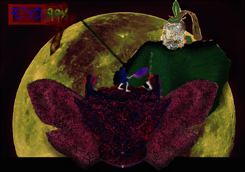

Overview
EndGon is a 2D action adventure game. Play as a wandering warrior monk and command EndGon (the gate to hell) as you cleave and burn your way through an army of flying Shaolin monks and nature themed baddies in a quest to save heaven and earth from the tyrannical Bulb Shogun.
